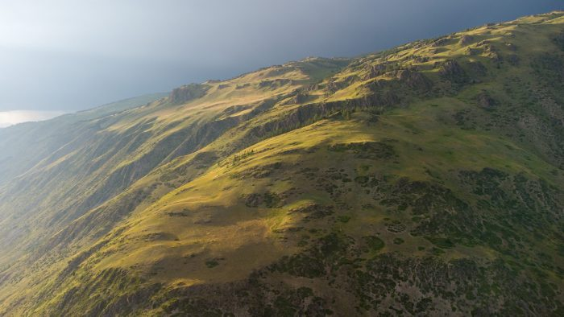

The Altai is a single mountain system that four countries share: Russia, Mongolia, China, and Kazakhstan. The Kazakh sector holds the range's highest peak, its largest protected area, and — thanks to the same border logistics that limit access — its most intact ecosystems. This is a guide to the Kazakhstani Altai for travelers planning to visit.
The Great Altai, briefly
The Altai is one of the youngest and most biodiverse mountain systems in Asia. Its Kazakhstan sector runs across the northeast, culminating at Mount Belukha (4506 m) — the highest point of both the Altai range and Siberia. In 2017, UNESCO designated the trans-boundary Great Altai Biosphere Reserve, combining Kazakhstan's Katon-Karagay National Park with Russia's Katunsky Reserve on the northern side of the same mountains. It's one of a small number of trans-boundary UNESCO reserves in Asia — a bureaucratic achievement that took two decades and matters because it means the same ecosystem is protected on both sides of a political border.
Kazakh Altai — key facts
- Highest peakMount Belukha, 4506 m
- Main protected areaKaton-Karagay National Park (643,477 ha)
- UNESCO statusGreat Altai Biosphere Reserve (2017)
- Border withRussia, China, Mongolia
- Gateway townKaton-Karagay village
- Regional airportUst-Kamenogorsk (UKK)
Katon-Karagay National Park
Established in 2001, Katon-Karagay covers the southern slopes of the Katunsky Range (including the south face of Belukha), the Listvyaga, Sarymsakty, and South Altai ranges, and the upper watersheds of the Bukhtarma, White Berel, and Black Berel rivers. At 643,477 hectares, it's Kazakhstan's largest national park — larger than half of the Alpine national parks in Europe combined. 34% of the area is forest, dominated by Siberian cedar, spruce, larch, and fir.
Wildlife includes species that have become rare across most of their historical range: snow leopard, argali sheep, taimen (a landlocked salmonid that can exceed 40 kg), black stork, saker falcon, and about 30 more species listed in Kazakhstan's Red Book of endangered fauna. Wolves and brown bears are present at natural densities. You will not necessarily see them — cedar taiga is very good at hiding animals — but the ecosystem is genuinely functional.
Key destinations inside the park
The park is too large to explore fully in a single trip. Most curated itineraries focus on a manageable set of destinations:
Lake Yazevoye. A high-altitude lake in the White Berel valley, surrounded by alpine meadows. One of the best places in the park for a stationary day — fishing, day hikes to viewpoints of the Belukha massif, quiet evenings by the water.
The Berel burial mounds. Near the village of Berel, an active archaeological site since 1998 when a joint French-Italian-Kazakh expedition found a 4th-century BC Scythian royal burial. The permafrost lens beneath the tumulus preserved organic material — wooden coffins, leather saddles, sacrificial horses with elaborate gold-leaf ornaments. There is a small museum in the village.
Chindagatuy Gorge. An off-road destination in the upper reaches of the park. Narrow canyon walls, alpine river, and effectively zero other visitors — access requires knowing the route.
Rakhmanov Springs. A radon-based hot spring resort that has operated in some form since the 18th century. Modest infrastructure by international standards, but the setting — surrounded by cedar taiga at 1750 m — is remarkable.
Kokkol Waterfall. A 60-meter waterfall on the Bolshoy Kokkol River, reached on foot or by horseback from the Belukha climbing base. About 15 km from Mount Belukha itself. The nearby abandoned Kokkol tungsten mine is a haunting piece of Soviet-era industrial history.

Lake Markakol and the Austrian Road
Adjacent to Katon-Karagay but formally separate: the Markakol State Nature Reserve in Kurchum District. Its centerpiece is Lake Markakol — the second-largest lake in Kazakhstan by area, sitting at 1447 meters in a deep depression between the Kurchum and Azutau ranges. It's 38 km long, 19 km wide, and home to the endemic uskuch, a landlocked salmonid found nowhere else. The surrounding black taiga is a relict ecosystem retaining elements from before the last ice age.
The reason Markakol appears in most Kazakh Altai itineraries — despite being a different protected area — is the Austrian Road that connects it to Katon-Karagay via a series of high passes. The road was built during the First World War by Austro-Hungarian prisoners of war held in Semipalatinsk (modern Semey), who were sent into the mountains as labor. Today it's one of the most scenic and technically demanding routes in the entire Kazakh Altai — a slow, high, corrugated track that rewards the effort with views that don't exist anywhere else.

Mount Belukha
Belukha (4506 m) has been a mountaineering objective since 1914, when the Tronov brothers made the first ascent. It's not a technical climb by Alpine standards, but altitude and weather make it a serious undertaking — most guided ascents run 10 days and require prior high-altitude experience. Kazakhstan sits on the south side of Belukha; the more commonly climbed route is from Russia's north side, but both are legitimate.
For non-climbers, viewpoints on Belukha open from several places in Katon-Karagay — the head of the White Berel valley, the trail toward Kokkol, and the higher passes on the way to Rakhmanov Springs.
Practical considerations for foreign visitors
Border zone permit — this is not optional
Katon-Karagay sits in a border zone. All foreign nationals need a permit issued by the East Kazakhstan Department of Internal Affairs. Processing takes 2–4 weeks minimum. This is the single most important logistical constraint for foreign travelers to the region. If you're not working with a local operator, you'll spend real time on this. Local operators handle the paperwork as part of the booking.
Getting there
The gateway is Ust-Kamenogorsk (UKK). Direct flights from Astana and Almaty daily. From UKK, Katon-Karagay village is 360 km east — about 7 hours on paved road through Altai and Bolshenarym. Once inside the park, road quality drops sharply: dirt tracks, river fords, mountain switchbacks. A properly-equipped 4WD is mandatory beyond the village.
Season
Mid-June to mid-September. July is peak. Outside this window, high-altitude passes are snowed in or dangerously wet from thaw. Nighttime temperatures even in July can drop to near freezing at altitude — pack accordingly.
Accommodation
Options are: guesthouses in Katon-Karagay village and Berel (basic but comfortable, with hot showers and Russian banya), tent camps at wilderness locations, and the Rakhmanov Springs hotel/sanatorium. There are no international-brand hotels inside the park. Local operators including ourselves supply full camping equipment — tents, sleeping bags, mats — as part of expedition packages, so you don't need to fly gear from Europe.
Combining Altai with the rest of East Kazakhstan
A trip focused on the Altai alone works well as a 7-day expedition. For 10–14 day trips, worthwhile additions include the Bukhtarma valley (Old Believer villages, hot springs, the massive Bukhtarma reservoir), Ridder as a base for shorter alpine trips, and cultural stops in Ust-Kamenogorsk (the regional museum has substantial Scythian-era holdings that pair naturally with Berel).
For a broader regional picture and how the Altai fits into East Kazakhstan overall, see our East Kazakhstan travel guide.
Katon-Karagay
Altai Expedition
7 days / 6 nights covering Katon-Karagay National Park's key locations plus Lake Markakol via the Austrian Road. Three vehicles, small group, everything included.